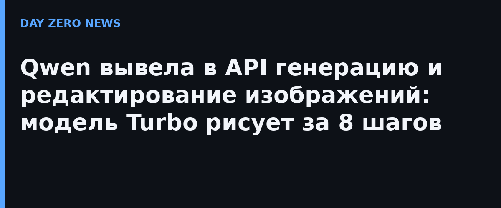

11 октября команда Qwen объявила, что API моделей Qwen-Image-2.1 Pro и Qwen-Image-2.1 Turbo официально доступны на платформе Qwen AI. Разработчикам больше не нужно разворачивать модель у себя и управлять инфраструктурой вывода: генерацию изображений по тексту и правку готовых картинок можно подключить к своему приложению обычным вызовом API. Вес Turbo-версии при этом синхронно открыты — её можно запускать и локально.
Qwen-Image-2.1 Turbo построена на 7-миллиардном визуальном генеративном блоке базовой модели Qwen-Image-2.1 и сокращает процесс генерации (денуайзинг) до 8 шагов, сохраняя возможность генерировать и редактировать изображения в разрешении 2K. Сама базовая модель, анонсированная ещё 20 сентября, объединяет генерацию и редактирование в одной модели: визуальный блок — 7 млрд параметров и 32 Single-Stream DiT-слоя, плюс нативная поддержка прозрачного фона (RGBA), ускорение за счёт механизма внимания разной гранулярности и повторного использования KV-кэша.
Модель принимает до 10 референсных изображений: из шести портретов она собирает групповое фото, из пяти элементов — полный образ для виртуальной примерки, из десяти предметов мебели — интерьер. Область правки задаётся кружком, «мазком» или отдельной маской, а при редактировании портретов модель старается сохранить черты лица, а при правке товаров — надписи, текстуры и форму. Практические сценарии, на которые ориентируют сами разработчики: карточки товаров и рекламные материалы, плакаты с типографикой, контент и визуальные истории, раскадровки и инфографика.
Анонс подхватили профильные издания: Marktechpost разобрал Turbo как «8-шаговую 7B-модель», репозиторий Qwen на GitHub и страница модели на Hugging Face подтверждают открытые веса и характеристики API. Отдельного официального анонса на русском языке нет — русскоязычный пересказ строится на международных источниках.
Для открытых весов это заметный шаг: связка «дешёвое облачное API + открытый чекпойнт для локального запуска» закрывает и быстрый продакшн, и полностью автономный сценарий.